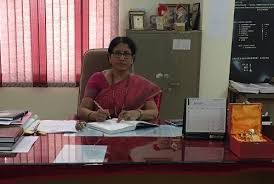

Electronics & Communication Engineering
B.E/B.Tech-> ECE->Intake:180->Fee: 95000
H.O.D(Head Of the Department)
 Name : Dr. B.Sarala
Designation : Professor &HOD
Qualifications : B.Tech.(JNTU) 1993, M.Tech.(JNTU) 1998,Ph.D(JNTU) 2016
Email: hod_ece@mvsrec.edu.in
She bagged the best teacher award instituted by the MECT Two times.
The department of Electronics and Communication Engineering was started in the year 1981.The current intake is 180 for UG. , 18 for P.G. Courses. The Department has experienced and well qualified teaching faculty and well stacked department library. The Department has well equipped laboratories such as Electronic and Automation Lab, Analog and Digital Communication Lab, DSP Lab, Microwave Lab, Microprocessor &Microcontroller Lab, Linear and Digital IC Lab, Design and Simulation Lab (PG), PCB Lab and Electronics Labs. The department has successfully completed three consultancy projects from DRDO in collaboration with Dept. of Mechanical engineering .The Department has augmented Laboratory facilities through four MODROBS Projects sanctioned by AICTE .The MVSR Engineering College is an institutional member of IETE.ECE Department is accredited by NBA for three times.
VISION:
To impart technical education of highest standards in Electronics and Communication Engineering producing technically competent engineers.
MISSION:
To impart adequate fundamental knowledge in Electronics and Communication Engineering.
To maintain a creative balance of academic, professional and extracurricular programs.
To create climate conducive to excellent teaching learning process with highest standard of engineering and technology.
To nurture creativity in students with solid communication and team work skills.
To contribute to advancements of Electronics and Communication Engineering and Technology with educational and collaborative efforts.
To make positive contribution to meet social need and promote the value of ethical behavior.
SHORT RANGE GOALS:
Update lab facilities on a continuing basis.
Adopt effective teaching practices to improve academic results.
Encourage teaching faculty to obtain higher qualifications. Skill improvement of non-teaching staff organize seminars &workshops.
Conduct training programs to meet the demands of students for competitive examinations.
LONG RANGE GOALS:
Conduct continuing education programmes for working professionals.
Involving ECE faculty in the training programmes of technical institutions.
Commencement of post graduate courses to meet the growing demands.
Creation of Research &Development base for interaction with other professional bodies.
Getting recognition to ECE department centre as a franchise or study centre.
PROGRAMME EDUCATIONAL OBJECTIVES:
To prepare students with excellent comprehension of basic sciences, mathematics and engineering subjects facilitating them to gain employment or pursue postgraduate studies with an appreciation for lifelong learning.
To train students with problem solving capabilities such as analysis and design with adequate practical skills wherein they demonstrate creativity and innovation that would enable them to develop state of the art equipment and technologies of multidisciplinary nature for societal development.
To inculcate positive attitude, professional ethics, effective communication and interpersonal skills to succeed in chosen profession, as team member and as well as leader.